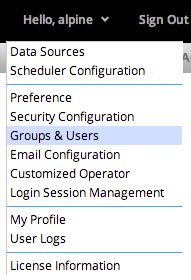

To open the Groups & Users Management dialog, click the user drop down button, then click the Groups & Users button on the drop down menu.

Use the Groups tab to create, edit, and delete groups.
To create a new group, enter a Name and Description in the corresponding boxes and click Create.
To edit an existing group's description, select the group from the Groups grid. The group's current information will be displayed in the Name and Description boxes. Make the desired changes and select Update to update the group's information. Changes are not allowed to an existing group's name.
Manage user information, group membership, roles, and notification settings on the Users tab.
To create a new user, enter a unique login name and appropriate corresponding information, and then click Create.
To edit an existing user's information, click on the user in the Users grid to display their current info, make the desired changes, and click Update. A new user must be created if editing the user login ID.
Select the Receive Notification checkbox to allow the user to receive notifications if a flow is created, updated, or deleted.
User Roles are a mechanism for controlling permissions within the application. A user may be an Administrator, a Modeler, or both, or neither. In brief, an Administrator has access to system administration functions, and a Modeler may construct new workflows. An Analyst is a user who has neither role, and is able to view and execute existing workflows.